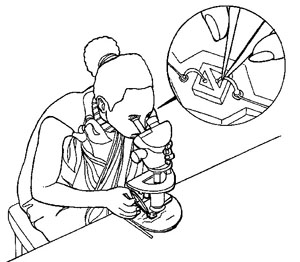

Formative Assessment
Exercise - Identifying hazards in the workplace
Note:For this exercise, two or tree students can work together. Use the Mail to communicate with each other if you not attending class.
The pictures below show different workplaces where a variety of hazards can be found. Look at the pictures and imagine what sort of problems might exist in each workplace. Some of the major hazards associated with each of these jobs are given below.
Discuss the hazards that may be associated with these jobs
and prepare a Job Safety Analysis (JSA) for two (2) of the workplaces shown below.
 |
1. Welder — A welder can be burnt from the sparks and there is always the danger of the work process starting a fire. There is the problem of the intense light which can cause permanent eye damage as well as the fumes given off by the process which can damage the lungs. |
| 2. Mechanic - Depending on the precise nature of a mechanic's duties, there may be safety problems from cuts and falls, etc., and exposure to chemical hazards: oils, solvents, asbestos and exhaust fumes. Mechanics can also have back and other musculoskeletal problems from lifting heavy parts or bending for long periods. | |
 |
3. Port worker - Again hazards depend largely on the nature of the job and in particular the cargo being handled. Port workers often have no idea of the dangerous nature of the cargo; there may be a sign on the side of a box or drum, but the information may not be in their language or in words that make much sense to the average worker. The condition of the cargo is also important as leaking drums or split bags can be very hazardous for the handlers. Other risks include falls, cuts, back and other musculoskeletal problems as well as collisions with fast moving vehicles such as fork-lift trucks or delivery trucks. |
 |
4. Textile worker - The textile worker faces a variety of problems. First there is the problem of safety with many machines around that are often unguarded, as well as the risk of fire with so much combustible material in the workplace. Then there are the hazards of noise and vibration. There is also exposure to dust from the material which can seriously affect the lungs. Exposure to cotton dust can lead to the occupational disease known as byssinosis. |
| & | 5. Tractor driver - One of the most serious problems with tractors is that they often overturn and, if they have no safety cab, the driver can easily be crushed. Other problems include noise, vibration and exposure to chemical herbicides and pesticides when being sprayed by tractor. |
| 6. Agricultural worker - When spraying crops the worker may be exposed to hazardous chemicals contained in the spray. Many pesticides and herbicides that have been banned in some countries because of their toxic effects are still used in many developing countries. If spraying takes place on a windy day, the spray can be breathed into the lungs and blown on to the skin where it can cause damage. It can also be absorbed into the body through the skin. | |
|  | 7. Electronics assembly worker - An electronics assembly worker can suffer eye problems from doing close work, often in poor light. Because such workers sit still for long periods with inadequate seating, they can also suffer from back and other musculoskeletal problems. For some workers there are the dangers of solder fumes or solder “flecks” in the eye when the excess solder is cut off with pliers. |
 |
8. Office worker - Many people may think that office workers have no health and safety problems; this is far from true. Stress is one of the most common complaints, as well as exposure to chemical hazards from office machines such as photocopiers. Poor lighting, noise and poorly designed chairs and stools can also present problems. |
 |
9. Construction worker - Construction workers face a variety of hazards, particularly safety problems such as falls, slips, trips, cuts, and being hit by falling objects. There are also dangers from working high up, often without adequate safety equipment, musculoskeletal problems from lifting heavy objects, as well as the hazards associated with exposure to noisy machinery. |
| 10. Miner - The hazards of mining are well known and include the ever present danger of dusts, fire, explosion and electrocution, as well as the hazards associated with vibration, extreme temperatures, noise, slips, falls, cuts, etc. |